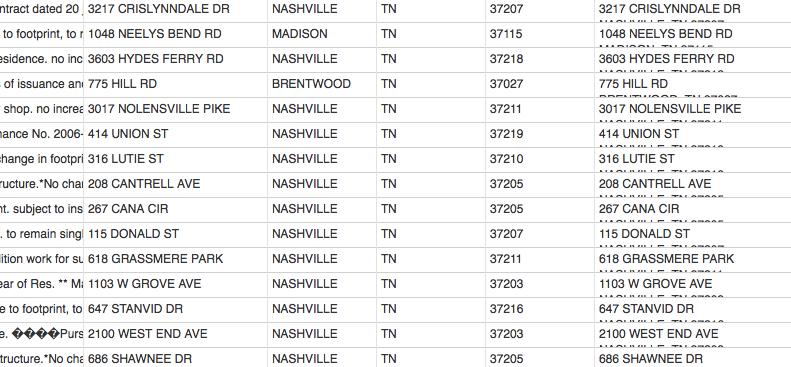
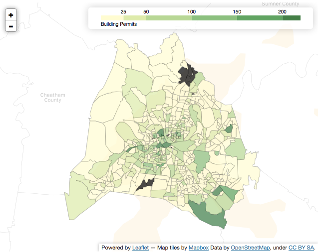
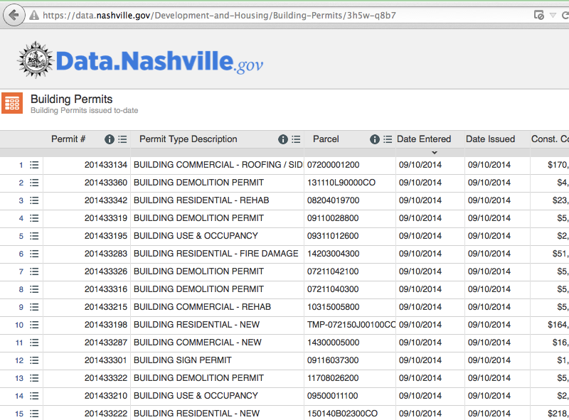
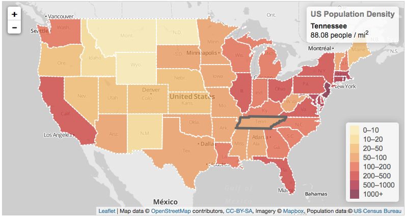

Let's Map It!
Building Maps For The Web
CoderFaire 2014
What We Will and Will Not Talk About
What We'll Talk About
Geospatial data formats.
What We'll Talk About
Tools for transforming geospatial data.
What We'll Talk About
Libraries to quickly view data.
What We'll Talk About
Libraries to present data.
What We Won't Talk About
How tile servers work.
What We Won't Talk About
Geographic projections (see XKCD #977)

Why Should You Care?
It Has Gotten Better
This?
Or This?
Interesting Maps Abound!
Making Maps with Python (Trulia)
Geographic
Data Formats
Shapefile
tl_2013_47_bg.dbf tl_2013_47_bg.prj tl_2013_47_bg.shp tl_2013_47_bg.shp.xml tl_2013_47_bg.shx tl_2013_47_bg.zip
An explanation may be in order...
.shp—The main file that stores the feature geometry (required).
.shx—The index file that stores the index of the feature geometry (required).
.dbf—The dBASE table that stores the attribute information of features (required).
There is a one-to-one relationship between geometry and attributes, which is based on record number. Attribute records in the dBASE file must be in the same order as records in the main file.
.sbn and .sbx—The files that store the spatial index of the features.
.fbn and .fbx—The files that store the spatial index of the features for shapefiles that are read-only.
.ain and .aih—The files that store the attribute index of the active fields in a table or a theme's attribute table.
.atx—An .atx file is created for each shapefile or dBASE attribute index created in ArcCatalog. ArcView 3.x attribute indexes for shapefiles and dBASE files are not used by ArcGIS. A new attribute indexing model has been developed for shapefiles and dBASE files.
.ixs—Geocoding index for read/write shapefiles.
.mxs—Geocoding index for read/write shapefiles (ODB format).
.prj—The file that stores the coordinate system information (used by ArcGIS).
.xml—Metadata for ArcGIS—Stores information about the shapefile.
.cpg—An optional file that can be used to specify the code page for identifying the character set to be used.
KML
"Keyhole Markup Language"
<?xml version="1.0" encoding="UTF-8"?>
<kml xmlns="http://www.opengis.net/kml/2.2">
<Document>
<Placemark>
<name>New York City</name>
<description>New York City</description>
<Point>
<coordinates>-74.006393,40.714172,0</coordinates>
</Point>
</Placemark>
</Document>
</kml>
"..XML notation for expressing geographic annotation and visualization..."
A zillion other
formats...
(Many of them proprietary.)
(Most of them XML extensions.)
GeoJSON
{
"type": "Feature",
"geometry": {
"type": "Point",
"coordinates": [125.6, 10.1]
},
"properties": {
"name": "Dinagat Islands"
}
}
GeoJSON
{
"type": "FeatureCollection",
"features": [
{
"type": "Feature",
"geometry": {
"type": "Multipolygon",
"coordinates": [125.6, ( .... snip .... ) 10.1]
},
"properties": {
"name": "Dinagat Islands"
}
},
...
]
}
New Hotness
TopoJSON
"TopoJSON eliminates redundancy, allowing related geometries to be stored efficiently in the same file."https://github.com/mbostock/topojson
Databases
Just go with PostgreSQL/PostGIS.
Point - a single position.
MultiPoint - an array of positions.
LineString - an array of positions forming a continuous line.
MultiLineString - an array of arrays of positions forming several lines.
Polygon - an array of arrays of positions forming a polygon (possibly with holes).
MultiPolygon - a multidimensional array of positions forming multiple polygons.
GeometryCollection - an array of geometry objects.
Feature - a feature containing one of the above geometry objects.
FeatureCollection - an array of feature objects.
(Source)
GDAL
A tool you should use
Project time!
Let's build some maps!
The Data - Building Permits
The Question
Which parts of Nashville have filed the most housing permits?
The Method
Look at permits per blockgroup.
First Step
Where can we get block groups?
US Census
TIGER/Line Shapefiles and TIGER/Line Files
TN = 47
Let's grab that file. (Just not now. Be kind to the WiFi, yo.)
wget ftp://ftp2.census.gov/geo/tiger/TIGER2013/BG/tl_2013_47_bg.zipUnzipped; yep, looks like a shapefile.
$ unzip tl_2013_47_bg.zip
$ ll
-rwxrwxr-x 1 brian staff 383K Aug 2 2013 tl_2013_47_bg.dbf
-rwxrwxr-x 1 brian staff 165B Aug 2 2013 tl_2013_47_bg.prj
-rwxrwxr-x 1 brian staff 36M Aug 2 2013 tl_2013_47_bg.shp
-rwxrwxr-x 1 brian staff 19K Aug 2 2013 tl_2013_47_bg.shp.xml
-rwxrwxr-x 1 brian staff 32K Aug 2 2013 tl_2013_47_bg.shx
Convert this thing to GeoJSON!
$ ogr2ogr -t_srs "EPSG:4326" -f "GeoJSON" tennessee.geojson tl_2013_47_bg.shpWait, what?
ogr2ogr
converts simple features data between file formats
ogr2ogr -t_srs "EPSG:4326"-f "GeoJSON" tennessee.geojson tl_2013_47_bg.shpGuesses as to file size?
$ ls -l
-rw-r--r-- 1 brian staff 62M Sep 4 20:28 tennessee.geojson
iPython 3.4.0 (default, Apr 15 2014, 20:38:59)
[GCC 4.2.1 Compatible Apple LLVM 5.1 (clang-503.0.38)] on darwin
Type "help", "copyright", "credits" or "license" for more information.
>>> import json
>>> f = open('tennessee.geojson')
>>> j = json.loads(f.read())
>>> j.keys()
dict_keys(['features', 'type', 'crs'])
>>> j['type']
>>> 'FeatureCollection'
>>> len(j['features'])
4125
# note that the properties value stores
# useful information like county FIPS (COUNTYFP)
>>> j['features'][0]['properties']
{'NAMELSAD': 'Block Group 3', 'BLKGRPCE': '3', 'STATEFP': '47',
'INTPTLAT': '+36.0563099', 'INTPTLON': '-083.8449238', 'COUNTYFP': '093',
'AWATER': 0.0, 'TRACTCE': '005201', 'GEOID': '470930052013',
'MTFCC': 'G5030', 'ALAND': 14162071.0, 'FUNCSTAT': 'S'} >>> # Davidson County is 037.
# number of davidson co block groups
>>> len([feature for feature in j['features'] \
if feature['properties']['COUNTYFP'] == '037'])
473
>>> davidson_county_blocks = [feature for feature in j['features'] \
if feature['properties']['COUNTYFP'] == '037']
>>> j['features'] = davidson_county_blocks
>>> dc = open('davidson_county_blocks.geojson', 'w')
>>> dc.write(json.dumps(j))
2259120
>>> dc.close()
-rw-r--r-- 1 brian staff 2.2M Sep 4 20:59 davidson_county_blocks.geojson
Great!
Now how do I see this thing?
Folium

https://github.com/wrobstory/folium
"Python Data. Leaflet.js Maps."
import folium
geo_path = r'data/davidson_county_blocks.geojson'
bna = folium.Map(location=[36.1881350, -86.7207050],
tiles='Mapbox Bright', zoom_start=10)
bna.geo_json(geo_path=geo_path)
bna.create_map(path='bna.html')
Need to find out number of permits per blockgroup.
for each blockgroup
count number of points in block groupPostgreSQL/PostGIS, Here We Come!
Using Postgress.App on Mac OS X
$ psql -h localhost
psql (9.3.5)
Type "help" for help.
brian=# create database buildings;
CREATE DATABASE
brian=# \c buildings
You are now connected to database "buildings" as user "brian".
buildings=# create extension postgis;
CREATE EXTENSION
buildings=# \q
$ shp2pgsql -s 4326 tl_2013_47_bg blockgroups | psql -d buildings $ psql -d buildings buildings=# select count(*) from blockgroups; count ------- 4125 (1 row)
That wasn't too bad.
Unfortunately, the government data is a bit messier.
CREATE TABLE building_permits (
permit INTEGER,
permit_type_description VARCHAR(40),
parcel VARCHAR(18),
date_entered DATE,
date_issued DATE,
const_cost VARCHAR(12),
subdivisionlot VARCHAR(100),
contact VARCHAR(60),
per_ty VARCHAR(4),
ivr_trk INTEGER,
purpose TEXT,
address VARCHAR(31),
city VARCHAR(14),
state VARCHAR(2),
zip INTEGER,
mapped_location VARCHAR(92),
longlat geometry(Point, 4326)
);Load that crazy CSV file...
buildings=# \copy building_permits (permit, permit_type_description, [...]
zip, mapped_location) from 'building_permits_20140828.csv' with csv header;
buildings=# select count(*) from building_permits;
count
-------
14678
(1 row)
Note that longlat is still NULL.
Those that have sensitive stomachs may want to look away.
update building_permits set pt = st_pointfromtext('point(' ||
replace(substring(mapped_location from '[\-0-9\.]+\)'), ')', '') ||
' ' ||
substring(mapped_location from '[0-9]{2}\.[0-9]{10}') || ')', 4326);
Basically, longlat = POINT(X, Y, SRID)
Again, the 4326 is the same SRID you saw for the ogr2ogr tool earlier.
buildings=# select geoid, count(1) as total_permits from blockgroups bg,
building_permits bp where st_contains(bg.geom, bp.longlat)
group by geoid order by total_permits desc limit 5;
geoid | total_permits
--------------+---------------
470370156232 | 272
470370195002 | 267
470370191141 | 266
470370121001 | 260
470370195001 | 252
(5 rows)
Let's map it with Folium again...
Create CSV
#buildings=# \copy (select...) to 'data/total_permits_by_geo.csv' with csv;import folium
import pandas as pd
geo_path = r'davidson_county_blocks.geojson'
building_permits = pd.read_csv(r'total_permits_by_geo.csv')
bna = folium.Map(location=[36.1881350, -86.7207050],
tiles="Mapbox Bright", zoom_start=10, width=640)
bna.geo_json(geo_path=geo_path,
data=building_permits,
columns=['GEOID', 'Permits'],
key_on='feature.properties.GEOID',
threshold_scale=[25, 50, 100, 150, 200],
fill_color='YlGn', fill_opacity=0.7, line_opacity=0.2,
legend_name='Building Permits')
bna.create_map(path='bna.html')
Time to step away from the folium and go raw Leaflet.js...
A Simple Map
<!DOCTYPE html>
<head>
<link rel="stylesheet" href="http://cdn.leafletjs.com/leaflet-0.5/leaflet.css" />
<script src="http://cdn.leafletjs.com/leaflet-0.5/leaflet.js"></script>
</head>
<body>
<div id="map" style="width: 960px; height: 500px"></div>
<script>
var map = L.map('map').setView([37.8, -96], 4);
L.tileLayer('http://{s}.tile.stamen.com/toner/{z}/{x}/{y}.jpg', {
maxZoom: 18
}).addTo(map);</script>
</body>
</html>
We need to pull in our GeoJSON, can use queue and d3...
queue()
.defer(d3.json, 'data/building_permits.geojson')
.await(makeMap);
function makeMap(error, geoJSON) { }
var map = L.map('map').setView([36.188135, -86.720705], 10);
davidsonCo = L.geoJson(geoJSON).addTo(map)davidsonCo = L.geoJson(geoJSON,
{style: style, onEachFeature: onEachFeature }).addTo(map)The Choropleth
function style(feature) {
return { fillColor: getColor(feature.properties.building_permits), opacity: 1, color: 'black', fillOpacity: 0.9, weight: 0 };
}
function getColor(d) {
return d > 250 ? '#800026' :
d > 200 ? '#BD0026' :
d > 150 ? '#E31A1C' :
d > 100 ? '#FC4E2A' :
d > 50 ? '#FD8D3C' :
d > 20 ? '#FEB24C' :
d > 10 ? '#FED976' :
'#FFEDA0';
}
}The Pop-up
function onEachFeature(feature, layer) {
if (feature.properties
&& feature.properties.GEOID
&& feature.properties.building_permits) {
layer.bindPopup(feature.properties.GEOID + " has "
+ feature.properties.building_permits + " building permits.");
}
}We can also dispense with the tiles.
d3.geo
var width = 500;
var height = 500;
var vis = d3.select("#vis").append("svg")
.attr("width", width).attr("height", height)
d3.json("data/building_permits.geojson", function(json) {
...
});
var center = d3.geo.centroid(json)
var scale = 50000;
var offset = [width/2, height/2];
var projection = d3.geo.mercator().scale(scale).center(center)
.translate(offset);
Helpful tips: www.maori.geek.nz/post/d3_js_geo_fun
var path = d3.geo.path().projection(projection);
vis.selectAll("path").data(json.features).enter().append("path")
.attr("d", path)
.style("fill", "#a6bddb")
.style("stroke-width", "0.3")
.style("stroke", "white")
How about some
choropleth?
var color = d3.scale.quantize()
.range([
"rgb(254,229,217)",
"rgb(252,174,145)",
"rgb(251,106,74)",
"rgb(222,45,38)",
"rgb(165,15,21)"
]).domain([0, 300]);
function choroplethColor(feature) {
return color(feature.properties.building_permits);
}
vis.selectAll("path").data(json.features).enter().append("path")
.attr("d", path)
.style("fill", choroplethColor)
.style("stroke-width", "0.3")
.style("stroke", "white")
Wrapping Up
Geodata is still just Data.
The tools have gotten really good.
You should be building maps.
Resources
Thanks!
@byeliad / dailytechnology.net
Special thanks to Lance Roggendorff for reviewing.